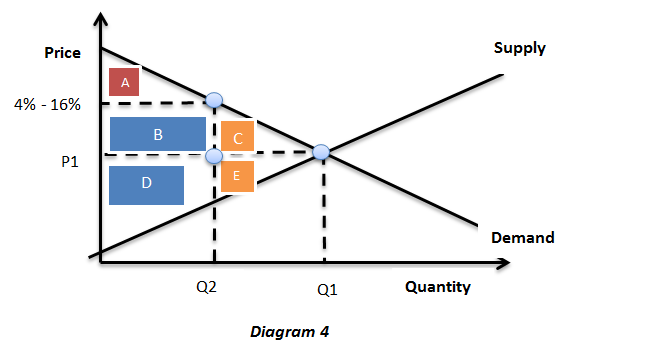
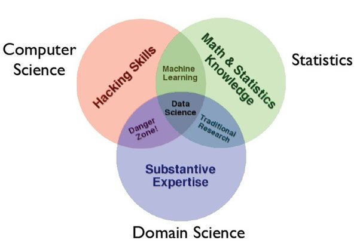

To begin, one of the integral concepts of Economics that is interrelated with the field of Computer Science, is the idea of a monopoly in software programming OS systems. OS systems are the management systems of a computer system that control the visual appearance and functionality of the computer system.
OS systems are the management systems of a computer system that control the visual appearance and functionality of the computer system. The most common OS operating systems include Microsoft, and Apple’s IOS operating systems. Chase Flowers in the article “Software Monopolies: The Dominating Consequences of Apple and Microsoft’s Market Share in the Software Industry [1](Flowers, 2016)”, terms these common operating systems as having a “natural monopoly[1]”. Flowers defines a natural monopoly as “efficiency of a certain market requires that it be provided by the few rather than the many[1](Flowers, 2016)”.
Such a phenomenon is rather unique in the field of Computer Science, as it usually thrives through competition and new found efficient programs. Programming languages themselves are always rapidly changing and the new found programs often replace older methods every five years. Yet, it is quite logical that the two dominating spheres of OS systems exist in such a market, due to the large cost of production and the ease of the consumer.
Another reason for the OS systems monopoly in their economic sectors is related to the concepts of brand value and programmer convenience. Creating new software products to be programmed using these software tools such as Microsoft OS or IOS requires mastery or elementary proficiency in the programming languages. As these exist the standardized programming languages such as Android Studio and Swift, for Android OS and IOS respectively, learning the basics of the two are a part of any Computer Science curriculum.
Dart by Google stands as a unique programming language that is able to simultaneously work for both applications in android and ios. One of the possible future applications that may become a front-runner in application programming is the Dart language. In summation, OS systems largely are dominated by two programming languages as they have been largely standardized.